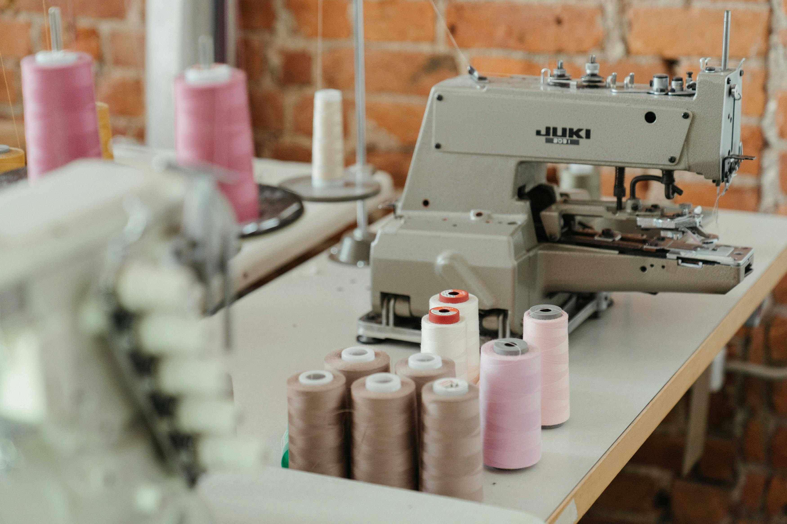
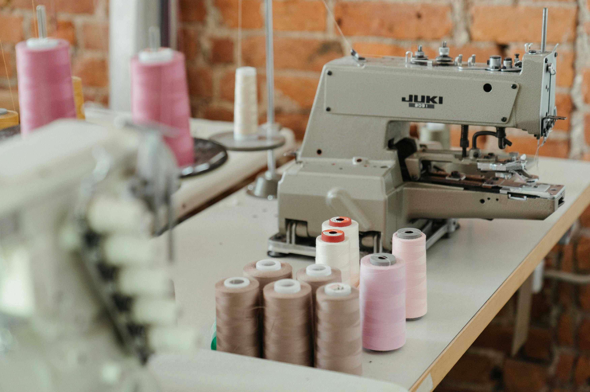

Testimonials:
"I was a complete beginner when I started this sewing course, and I can’t believe how much I’ve learned! The instructors are incredibly supportive, and I’ve gained so much confidence. I’ve made my first dress, and I can’t wait to create more projects!"
— Sarah T.
"Sewing has been a game-changer for me. Not only have I learned to repair my clothes, but I've also discovered a new creative outlet. The hands-on approach of this course made it easy to understand even the more complex techniques. Highly recommend!"
— Michael L.
"I loved this sewing course! The community was welcoming, and I met so many like-minded people. The projects were fun and challenging, and I now have a whole wardrobe of custom pieces that I made myself!"
— Emma R.

 
